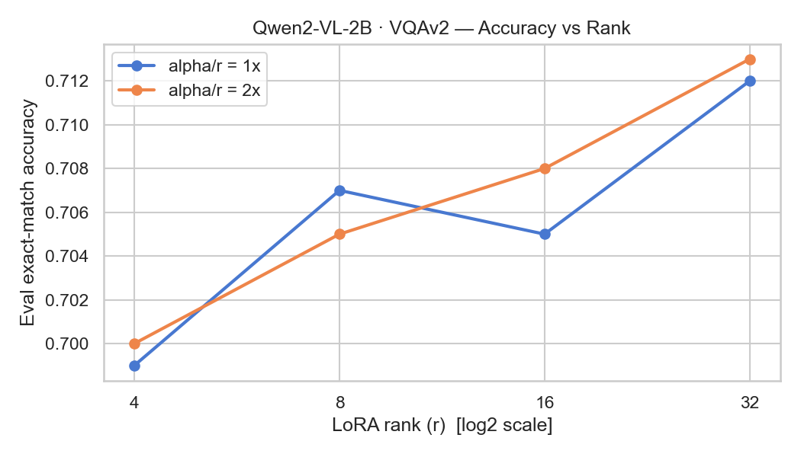
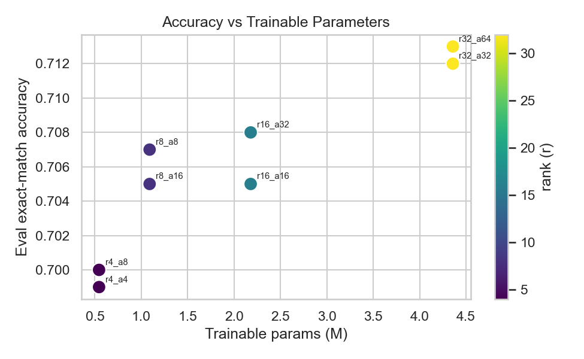

一份把整條 fine-tuning pipeline 拆給面試官看的技術文件 — 資料、模型、前處理、LoRA 數學、結果解讀、亮點與限制,每節附高機率問答。
在凍結的視覺語言模型上,用最小的可訓練參數量問一個工程問題:rank 跟 alpha 各值多少錢、買到多少準確率?
任務:把開源視覺語言模型 Qwen2-VL-2B-Instruct 用 LoRA 在 VQAv2(視覺問答)上做監督式微調,並系統性地掃描 LoRA 的兩個核心超參 r(rank)與 alpha,量化「容量 ↔ 準確率」的取捨曲線。
一句話結論:在這個 5000 筆子集上,rank 把參數量拉 8×(r4→r32)只換到 +1.4 個百分點的 exact-match(0.699→0.713);alpha/r = 2× 在多數 rank 上穩定優於 1×;r8_a16 是準確率/參數量 CP 值最高的工作點。容量不是這份資料的瓶頸。
VQAv2 是視覺問答的標準 benchmark,設計上刻意「去語言先驗」,逼模型真的看圖。
一筆 = (image, question, answers)。圖來自 COCO;問題是人寫的自然語言;答案由 10 位標註者各給一個短詞,另有一個 multiple_choice_answer(最高票答案)。
{
"image": <PIL.Image, COCO 照片>,
"question": "What color is the umbrella?",
"answers": [{"answer":"red"}, {"answer":"red"}, ... ×10],
"multiple_choice_answer": "red" # 我們訓練/評估用的 gold
}VQA v1 有嚴重的語言偏差 — 很多問題不看圖、純猜統計先驗就能答對(「天空什麼顏色」永遠答藍)。VQAv2 為每個問題配一張答案相反的互補圖(complementary pairs),把這條捷徑堵死,所以 v2 上的分數更能反映真正的視覺理解。面試常考這點。
lmms-lab/VQAv2 的 validation split(parquet 原生)。原始 HuggingFaceM4/VQAv2 是 loading-script 形式,datasets≥3 已不支援,會直接報錯。shuffle(seed=42) 後取 5000 筆,再 train_test_split(test_size=0.2) → 4000 train / 1000 eval。validation 切出來的子集當 train+eval,不是官方 test-std;5000 筆也遠小於完整 VQAv2(~120 萬 QA)。所以絕對分數只在這個受控設定內有意義,sweep 之間的相對趨勢才是重點。
一個能吃任意解析度圖片的視覺語言模型;我們只在它的注意力投影上掛 adapter,主幹全凍。
model = Qwen2VLForConditionalGeneration.from_pretrained(
"Qwen/Qwen2-VL-2B-Instruct", torch_dtype=torch.bfloat16)
model = model.to("cuda") # 不用 device_map="auto"device_map="auto" 在單卡上會誤判,把模型一部分 offload 到 CPU,而 transformers≥4.5x 的 Trainer 偵測到 hf_device_map 就直接拒絕訓練。2B 模型在 L4 24GB 上綽綽有餘,直接 .to("cuda") 最乾淨。這是實跑才會踩到、純看教學不會知道的坑。
監督式微調的精髓在 label masking:只在「答案」那幾個 token 上算 loss,其餘全部 -100。
user: image + "Question: …" / assistant: answer
套 Qwen2-VL 模板,圖展開成 <image_pad> 佔位 token
文字 tokenize + 圖 patch 化 + padding,出 input_ids / pixel_values
pad、image、prompt 全設 -100,只留 answer
labels = input_ids.clone()
labels[labels == pad_id] = -100 # 不學 padding
labels[input_ids == image_token] = -100 # 不學圖的佔位 token
labels[i, :prompt_len[i]] = -100 # 不學問題,只學答案結果:cross-entropy 只在 answer span 上回傳梯度。模型學的是「看到這張圖+這個問題,該吐什麼答案」,而不是去重建問題或圖。
truncation=True, max_length=512。Qwen2-VL 一張圖會展開成數百個 <image_pad> token,512 截斷把一部分砍掉 → 文字宣稱的 image-token 數和 input_ids 實際數對不上 → processor 直接 ValueError。修法:不截斷,改用 image_processor.max_pixels 限制圖的解析度來控 token 數。截斷會切爛多模態對齊,這是 VLM 微調的經典陷阱。
凍結原權重,只學一個低秩增量;rank 決定容量,alpha 決定這個增量被放多大。
對一個原權重矩陣 W₀ ∈ ℝ^(d×k),LoRA 不動它,改學兩個小矩陣 B ∈ ℝ^(d×r)、A ∈ ℝ^(r×k),其中 r ≪ min(d,k):
h = W₀·x + (alpha / r) · (B·A)·x
└── 凍結 ──┘ └── 可訓練低秩增量 ──┘
A ~ N(0, σ²) 初始化, B = 0 → 起點 ΔW = 0,訓練從原模型出發r·(d+k) 個參數。r 越大,ΔW 能表達的方向越多 → 容量越大。alpha/r。它不增加參數,只放大/縮小這個低秩增量對輸出的貢獻 — 行為上類似給 adapter 一個額外的有效學習率。alpha/r,不是 alpha 絕對值。固定比值、只放大 r,測的是「容量」效果;固定 r、把 alpha 從 r 調到 2r,測的是「scaling / 有效學習率」效果。兩個軸拆開掃,才能歸因。
這是原始 LoRA 論文的標準目標集 — attention 裡 query 和 value 投影是 CP 值最高的注入點。trainable_params 因此極小:最大的 r32 也只佔全模型 0.197%。把 k_proj/o_proj/MLP 也加進來是最直接的下一步 ablation。
| r | trainable params | % of 2B model |
|---|---|---|
| 4 | 544,768 | 0.025% |
| 8 | 1,089,536 | 0.049% |
| 16 | 2,179,072 | 0.099% |
| 32 | 4,358,144 | 0.197% |
每個參數都有理由,面試官會逐個問「為什麼這個值」。
| 參數 | 值 | 為什麼 |
|---|---|---|
epochs | 1 | 小資料 + LoRA,1 epoch 足以看出趨勢,避免過擬合 & 省時 |
lr | 2e-4 | LoRA 常用區間(比 full-FT 的 ~2e-5 高一個量級,因只訓練少量參數) |
scheduler | cosine + 5% warmup | warmup 穩住前期,cosine 平滑收斂 |
batch | 4 × 4 = 16 | per-device 4 受 L4 顯存限制,gradient accumulation 補到有效 16 |
precision | BF16 | L4 native 支援;比 FP16 動態範圍大,不易 overflow |
dropout | 0.05 | LoRA 層的輕度正則 |
seed | 42 | 固定資料切分,讓 8 個 config 公平可比 |
r ∈ {4, 8, 16, 32} × alpha ∈ {r, 2r} = 8 個 run。每個 ~21 分鐘(含 1000 筆序列化 eval),單卡跑完約 2h47m,跑完自動關機省成本。
指標看似簡單,但「正規化」那一步藏了 VQA 的標準慣例。
對 1000 筆 held-out,逐筆 generate() 出答案,跟 gold 做正規化後的精確比對:
def vqa_normalize(s):
s = s.lower()
s = re.sub(r"[^\w\s]", " ", s) # 去標點
s = re.sub(r"\b(a|an|the)\b", "", s) # 去冠詞
return re.sub(r"\s+", " ", s).strip() # 收斂空白去冠詞/標點是 VQA 官方 metric 的慣例("a red car" 跟 "red car" 該算對)。本 demo 用單一 gold(multiple_choice_answer)做 exact match;官方 VQA accuracy 是對 10 個標註答案取 min(matches/3, 1) 的軟分數,比這個寬鬆 — 是已知的簡化。
generate() 沒有 batch,佔了每個 run 的大頭時間。要加速可改 batched generation 或減少 eval 筆數 — Day2 規模下還可接受,擴大 sweep 時必須先優化。
數字、圖、然後是能在白板上講三分鐘的歸因。
| run | r | alpha | alpha/r | trainable | % model | eval acc |
|---|---|---|---|---|---|---|
| r4_a4 | 4 | 4 | 1× | 544,768 | 0.025% | 0.6990 |
| r4_a8 | 4 | 8 | 2× | 544,768 | 0.025% | 0.7000 |
| r8_a8 | 8 | 8 | 1× | 1,089,536 | 0.049% | 0.7070 |
| r8_a16 | 8 | 16 | 2× | 1,089,536 | 0.049% | 0.7050 |
| r16_a16 | 16 | 16 | 1× | 2,179,072 | 0.099% | 0.7050 |
| r16_a32 | 16 | 32 | 2× | 2,179,072 | 0.099% | 0.7080 |
| r32_a32 | 32 | 32 | 1× | 4,358,144 | 0.197% | 0.7120 |
| r32_a64 | 32 | 64 | 2× | 4,358,144 | 0.197% | 0.7130 |


alpha/r = 2× 多數情況更好:r4(0.699→0.700)、r16(0.705→0.708)、r32(0.712→0.713)都是 2× 勝。較大的 scaling 像給 adapter 更高的有效學習率,小資料下有利。r8 是唯一反例(0.707→0.705),差距在 run-to-run 噪聲級。r8_a16:0.705 用了 r32 的 ¼ 參數。r32_a64 雖最高分,但多付 4× 參數只買 +0.8 pt。要選一個上線就選 r8。面試官最愛問「這專案的限制是什麼」— 主動講比被挖出來好。
git clone 就能複現。多 seed 估誤差棒 → 擴 target 模組 → batched eval → 加 QLoRA(4-bit)看顯存/精度取捨 → 跟 full fine-tune 對照上界。
點開即答。挑高機率、會追問的那些。
A、B。可訓練參數從 20 億掉到一兩百萬(<0.2%)。連帶好處:optimizer state(Adam 的動量/方差)也只需存這一小撮 → 顯存大降;且 adapter 可插拔,一個 base 配多個任務 adapter。ΔW = B·A = 0,模型一開始完全等於原始預訓練模型,不破壞已學到的能力,再從這個安全起點微調。A 用隨機高斯、B 用 0,是為了 break symmetry 同時保證零起點。truncation=max_length。正解是用 max_pixels 控解析度來限 token 數,而非截斷。